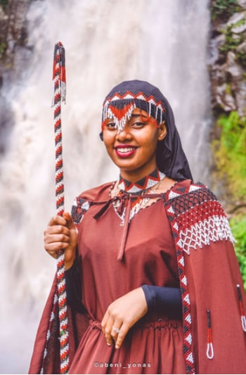
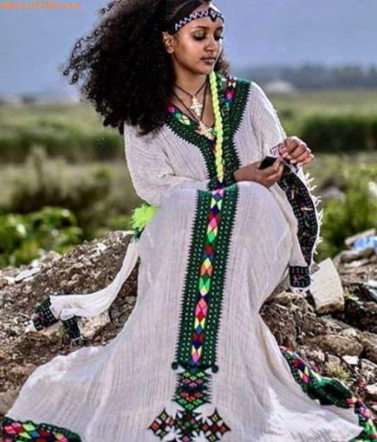
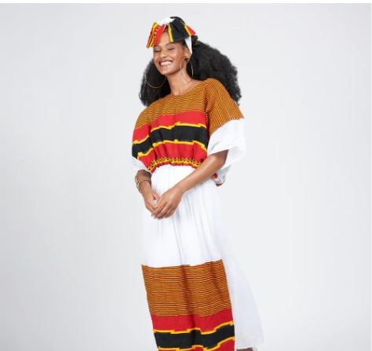
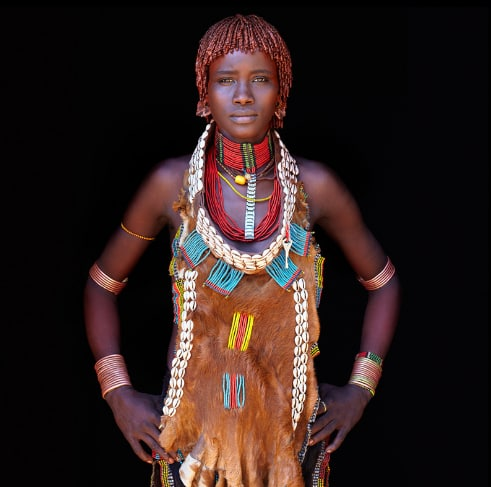

OROMO CULTURAL CLOTH
The woman in this picture is wearing the Oromo cultural cloth.
The stick she is holding is called siinqe which represents the right of a woman
The siinqe represents th protection of the womans right.
The oromo cultural cloth is famous for its variety and rich colors.

AMHARA CULTURAL CLOTH
The beautiful habesha dresses that are mostly made of a bautiful white garments is one the features that represent the Amhara cultural clothes
The most noticeable aspect on these dresses are the crosses sewn into the shoulders and chest.

Wolaita CULTURAL CLOTH
The wolaita cultural cloth is a beautiful cloth that has rich variety of designs .
The main colors of this beautiful cloth are black, orange and red.

BENISHANGUL GUMUZ CULTURAL CLOTH
One of th iconic cultural clothes that Ethiopia posses is a the traditional cloth of the Benshinangul Gumu people.
This clothe is suited for the place these Ethiopians live. Its unique design and features have made these clothes
one of those clothes that depict Ethiopia almost in a perfect sense.
HARAR CULTURAL CLOTH
The HARAR cultural clothes are known for their rich color and fancy jewleries that mostly have golden color.
The Harar cultural clothes are so colorful that they almost feel like they were woven by a supernatural being